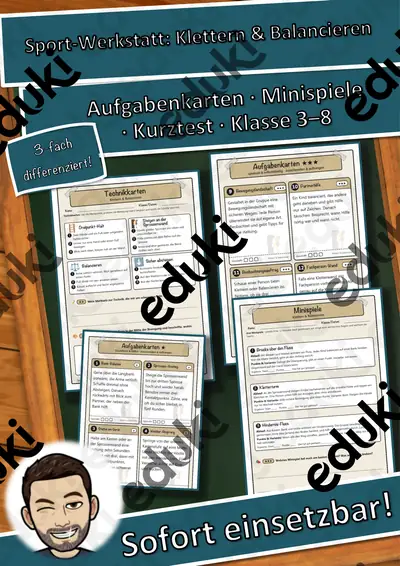

Die Kletterhalle – Lesespurgeschichte mit Rätselaufgaben (Klasse 4)
Begib dich mit deiner Klasse auf eine spannende Lesespur durch eine Kletterhalle! Emma und Nick erkunden mit der Kletterlehrerin Frau Fels eine bunte Halle – vom Empfang über die Umkleide, den Materialverleih, die Boulderwand, die Sicherungsstation, die Seilwand, den Überhang und den Kinderparcours bis zum Trainingsraum. Ganz nebenbei lernen die Kinder, wie man sich beim Klettern richtig ausrüstet, sich gegenseitig sichert und Schritt für Schritt sicher nach oben kommt. Am Ende jedes Abschnitts verrät ein Hinweis den nächsten Ort auf dem Hallen-Plan – nur wer richtig liest und mitdenkt, findet den Weg und sammelt alle geheimen Buchstaben zum Lösungswort.
Diese Lesespurgeschichte verbindet motivierendes, sinnentnehmendes Lesen mit echtem Sachwissen über sicheres Klettern und Bewegung und schult zugleich das genaue Arbeiten. Das Material ist SOFORT EINSETZBAR und in DREI DIFFERENZIERUNGSSTUFEN (leicht ★ / mittel ★★ / schwer ★★★) angelegt, sodass alle Kinder einer Klasse am selben Thema arbeiten können.WICHTIG: Das komplette Material ist sowohl in FARBE als auch in SCHWARZ-WEISS enthalten – ideal zum Sparen von Druckkosten.DAS IST ENTHALTEN
- Lesespurgeschichte in 3 Niveaus (leicht, mittel, schwer)
- farbiger Hallen-Plan als Suchkarte
- Hörverstehen mit QR-Code zur MP3 (Kinder hören selbstständig mit Kopfhörern)
- vier Aufträge auf dem Weg: ein Verbinde-Rätsel, ein Quiz, eine Rechenaufgabe und ein Steckbrief
- Rätselseite (Wörter-Suchsel + Wissensfragen)
- Ausmalbild zum Thema
- ausführliches Lösungsblatt für die Lehrkraft
- alles zusätzlich als komplette Schwarz-Weiß-VarianteSO FUNKTIONIERT DIE LESESPURDie Kinder lesen ab START, entnehmen dem Text einen Hinweis auf einen Ort in der Kletterhalle, suchen ihn auf dem Plan und lesen bei dieser Station weiter. An jeder richtigen Station gibt es einen Sammelbuchstaben. Eingebaute Sackgassen (Getränkeautomat, Fotowand, Schließfächer, Putzraum) dienen der Selbstkontrolle und machen deutlich, dass diese zwar zur Halle gehören, aber nicht zum Klettern. Am Ende werden die gesammelten Buchstaben umgestellt und ergeben ein geheimes Lösungswort. (Die Lösungen sind selbstverständlich nur im Lösungsblatt für die Lehrkraft enthalten.)INHALTLICHER SCHWERPUNKTSicheres Klettern in einer Halle: die richtige Ausrüstung (Kletterschuhe, Gurt, Seil), das gegenseitige Sichern am Seil, der Unterschied zwischen niedrigem Bouldern über dicken Matten und dem Klettern an der hohen Wand, Kraft, Gleichgewicht und Körpergefühl sowie Vertrauen, Ruhe und Rücksicht auf den Partner. Zur Abgrenzung werden Orte behandelt, die zwar zur Halle, aber nicht zum Klettern gehören. Das Material stellt die Zusammenhänge sachlich und kindgerecht dar.ABGEDECKTER LEHRPLAN (Klasse 3-5)
- Sachunterricht/Bewegung und Sport – sicher klettern und sichern: Ausrüstung und ihre Funktion, Sicherheitsregeln beim Sport, Kraft, Gleichgewicht und Körperwahrnehmung, Vertrauen und verantwortungsvolles Miteinander.
- Deutsch – Lesen mit Texten und Medien umgehen: Lesestrategien anwenden, Texten gezielt Informationen entnehmen, sinnentnehmend und selektiv lesen; Selbstkontrolle und Lesemotivation durch die Lesespur; Zuhören: einem Sachhörtext konzentriert folgen und Wesentliches entnehmen (Hörverstehen mit MP3).
- Mathematik – Rechnen im Sachzusammenhang (Zahlen rund um die Halle).
- Fächerübergreifend / Kompetenzen: Bewegungssicherheit und Unfallvermeidung, selbstständiges Arbeiten, genaues Lesen und Prüfen, Konzentration und Ausdauer, kreatives Gestalten (Ausmalbild).
Geeignet für Freiarbeit, Stationenlernen, Vertretungsstunden, Wochenplan und Homeschooling. Klassenstufe 3-5 (differenziert einsetzbar auch in angrenzenden Jahrgangsstufen).
Ähnliche Materialien

Sport-Werkstatt Klettern & Balancieren: Aufgabenkarten in 3 Stufen & Kurztest (Klasse 3–8)

Landkreis Schwäbisch Hall – Hörverstehen mit Lückentext (interaktiv)

Landkreis Schwäbisch Hall Lückentext mit Wortspeicher Hörverstehen und Suchsel

Klappbuch-Werkstatt: Der Wald von oben nach unten – Sachunterricht, 3 Stufen & Kurztest (Klasse 3–5)

Klettern sichern – Knoten, Seil und Partnercheck – Lesespurgeschichte mit Rätselaufgaben (Klasse 7)

Bewegungsbaustelle – bauen, klettern, rutschen, springen – Lesespurgeschichte mit Rätselaufgaben (Klasse 1)

Sicher unterwegs im Verkehr – Lesespurgeschichte mit Rätselaufgaben (Klasse 5)